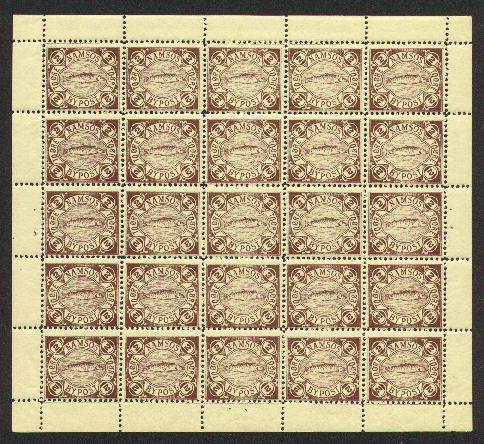
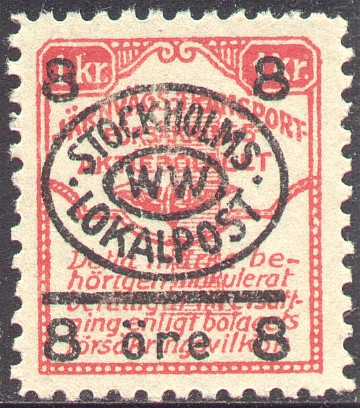

Return To Catalogue - Bypost overview
Note: on my website many of the
pictures can not be seen! They are of course present in the
catalogue;
contact me if you want to purchase the catalogue.
NOTE: not all the bypost stamps are yet catalogued by me. If anybody posesses pictures of bypost stamps that are not yet in my catalogue; please contact me!

2 o brown 4 o red 8 o lilac 10 o green Surcharged with large number '2' on 8 o lilac '4' on 10 o green
I have never seen a used stamp of Namsos. Used stamps seem to be very rare. For more information on Namsos Bypost stamps see: http://www.nordische-staaten.de/laender/Norwegen/Bypost/bypost.html (in German).
The Odense Bypost operated from 1884 to 1889.
3 o red (white numeral) 5 o brown
(Reduced size, image obtained thanks to Lasse Hult)
3 o blue (blue numeral)
I've seen tete-beche stamps of this value.
1 o orange 1 o brown 2 o green on red (2 types, the '2' is different) 3 o red on yellow (misprint? 10 o red on yellow) 5 o blue 10 o brown (red) on yellow 10 o black on yellow Surcharged '3' on 2 o green on red
With a 'T' in the center:
Postal stationary also exists in this design: 3 o brown.
Surcharged '3' manually
1 1/2 o green 4 o red 15 o red and black (central 'T' is black) Surcharged manually '3' on 1 1/2 o green '3' on 15 o red and black Surcharged '3' (red or black) on 4 o red '3' (silver) on 15 o red and black
Reduced size. Most stamps of Odense that I have seen have a
cancel "ODENSE BYPOST Omb" in violet or black color.
5 o brown 10 o red
The Randers Bypost issued stamps from 1885 to 1889.
3 o blue 5 o red
I've seen these stamps cancelled with a cirular violet "RANDERS BYPOST" cancel with no date (also with the letters S.C. in the center). Later issues have 'Randers * Bypost *' (also with no date and in violet).
(reduced sizes, I have also seen a surcharge of '1' on the 3 o
value)
3 o blue 5 o red Surcharged (1887) '1' (handstamped; smudgy or printed) on 3 o blue '2' on 5 o red (2 types, smudgily handstamped or printed; see images above)
(Arms of Randers in a circle, I have also seen a 2 o green with a
'R' overprint)
1 o violet (exists imperforate) 2 o green (exists imperforate; I've also seen proofs in red color) Surcharged 'T 3' on 1 o violet (manually surcharged or printed) 'T 3' on 2 o green (manually surcharged or printed) 'R' on 1 o violet 'R' on 2 o green
1 o red (exists imperforate) 1 o brown (exists imperforate) 2 o green (exists imperforate) 2 o orange (exists imperforate) 3 o green (exists imperforate) 3 o blue (exists imperforate) 5 o red (exists imperforate) 5 o blue (exists imperforate) 8 o yellow (exists imperforate) 8 o brown (exists imperforate) 10 o lilac (exists imperforate) Surcharged
'2' (black) on 10 o violet '2' (red) on 10 o violet '1 1/2' on 3 o blue '3' (small, covering the '5') on 5 o red '3' (large, placed on knight) on 5 o red Overprinted 'Telefon-Mrk' (1888) 10 o violet Overprinted '4 Strommen' (1888):
"4 Strommen." on 8 o yellow
Overprinted "Randers Mark." (1888):
5 o red

2 o green
1 o brown 2 o green 3 o blue 5 o red 8 o orange 10 o violet (all values exist imperforate)
2 o green 4 o red 8 o orange 10 o brown
Genuine cancelled stamps are very rare.
The 'Stockholms Stadspost' operated from 1887 to 1889.


I've seen some 'cancels?' with "I", "II",
"III", "IV" and "V".
1 o blue 2 o brown 3 o red 4 o blue and brown 5 o brown and green 10 o green and red Smaller head:
3 o red 4 o blue and brown
Overprint 'STOCKHOLMS WW LOKALPOST' on a insurance stamps:

Also other values the 4 o has inscription 'STOCKHOLMS AB.
LOKALPOST'
Lasse Hult provided me with the following
information concerning the above stamp:
"All stamps in 1926 issued by this operator (translated
= Stockholms Private Local Post), were provisionals overprinted
on Assurance Company labels. They are no rarities, but still not
often seen. I have 5 different of them."
Postal stationery:
Svendborg used stamps in 1887.

(Reduced size)
1 o green 2 o brown 3 o red 5 o blue 10 o orange and black
I have often seen these stamps overprinted with a violet circle with the text 'Svendborg Bypost.', also 'SVENDBORG BYPOST' in a straight line:
For local issues of Helsingfors and Tammerfors click here.
Imperforate 1 o blue on red 1 o blue on yellow 1 o brown 2 o brown on brown 3 o green on green 3 o orange 5 o red on blue 5 o green 10 o red 20 o blue Perforated (1885)
1 o brown 3 o orange 5 o green 10 o red 20 o blue Surcharged '2' on 1 o brown (perforated) '3 ORE.' on 5 o green (perforated)


{kind=link}
{kind=link}
{kind=link}
{kind=link}
{kind=link}